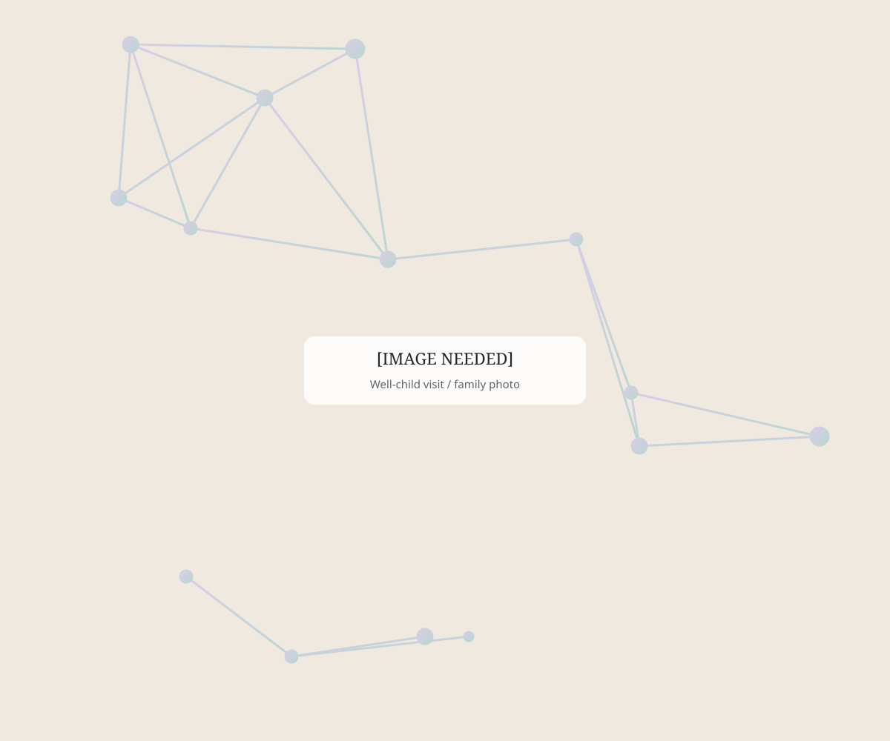

Pediatric Direct Primary Care
Pediatric Care, Done Differently.
More time. Better access. A provider who knows your child.
Pediatric Direct Primary Care at Shipley Pediatrics is a membership-based approach to primary care designed to create a stronger relationship between your family and your child's healthcare provider.
Less rushing. More conversation. Care centered around your child.

What is Pediatric Direct Primary Care?
A different way to experience primary care.
Direct Primary Care—often called DPC—is a different way to experience primary care.
Instead of relying on insurance for routine primary care services, families pay a simple monthly membership fee directly to Shipley Pediatrics. Membership provides access to your child's ongoing pediatric primary care and allows us to focus on what matters most: providing thoughtful, personalized care without the limitations of a traditional fee-for-service visit.
For families, that means more time to ask questions, better access when concerns arise, and an ongoing relationship with a provider who gets to know your child.
For families, DPC means
- More time to ask questions and be heard
- Better access when concerns arise
- An ongoing relationship with a provider who knows your child
- A simple monthly membership instead of per-visit billing
Membership
What's Included in Your Membership?
Well-Child & Preventive Care
Routine well-child visits, growth and developmental monitoring, preventive care, and guidance through every stage of childhood and adolescence.
Sick Care
When your child isn't feeling well, you'll have access to the practice you already know and trust rather than starting over with someone unfamiliar with their history.
Ongoing Pediatric Care
From everyday health concerns to ongoing conditions, Jen can follow your child over time and adjust their care as their needs change.
More Time With Your Provider
Appointments are designed to allow more time for conversation, questions, and understanding the bigger picture—not simply getting through the next appointment.
Direct Access & Communication
DPC creates a more accessible relationship between your family and Shipley Pediatrics, making it easier to get guidance when questions or concerns arise.
Care Coordination
When your child needs labs, imaging, specialists, or additional services, Shipley can help guide and coordinate the next steps in their care.
Experience that goes deeper
Primary Care That Understands Complex Kids
Not every pediatric concern fits neatly into a 15-minute visit.
Jennifer Shipley, CPNP, brings decades of pediatric nursing experience and extensive experience in pediatric neurology to the way she approaches primary care.
That background means Shipley Pediatrics is comfortable caring for healthy children with everyday pediatric needs while also understanding families whose children may have more complicated histories or ongoing concerns.
It's comprehensive pediatric primary care—with the time and experience to look deeper when needed.
Meet Jennifer Shipley
Simple, transparent membership pricing
No complicated pricing structure.
Your monthly membership is based on the number of children in your family who are enrolled.
For children from birth through age 21.
Per additional enrolled child.
No family will pay more than $295 per month in membership fees.
Enrollment fees are capped at $150 per family.
Insurance & eligibility
What About Health Insurance?
Direct Primary Care is not health insurance, and we encourage families to maintain appropriate health insurance coverage for services outside of the DPC membership.
Your insurance may still be needed for services such as specialist care, emergency and hospital services, prescriptions, laboratory testing, imaging, and other services provided outside Shipley Pediatrics.
A Note About DPC Eligibility
Because Shipley Pediatrics maintains agreements with certain insurance carriers, not every family is currently eligible to enroll in the DPC membership.
Patients covered by Blue Cross Blue Shield or Montana Medicaid are not currently eligible for Direct Primary Care membership while Shipley Pediatrics remains contracted with those plans. Services for those patients will continue to be handled according to the applicable insurance requirements.
Have questions about whether your family is eligible?
How to become a member
Becoming a Member Starts With a Conversation
We don't believe choosing your child's pediatric provider should begin with a stack of enrollment forms.
That's why families interested in Pediatric Direct Primary Care start with a complimentary Meet & Greet with Jen.
Schedule a Meet & Greet-
Explore Pediatric DPC
Learn about the membership, pricing, and approach to care.
-
Schedule Your Meet & Greet
Choose a convenient time for a brief conversation with Jen.
-
Meet Jen
Ask questions, talk about what you're looking for in your child's pediatric care, and determine whether Shipley Pediatrics feels like the right fit.
-
Become a Member
If you decide you'd like to move forward, the Shipley team will initiate your enrollment and send the appropriate membership agreement, registration information, and forms.
-
Welcome to Shipley Pediatrics
Once enrollment is complete, we'll help you get established with the practice and make sure you know exactly how to access care when your family needs us.
Frequently Asked Questions
Pediatric DPC Questions
Is Direct Primary Care health insurance?
No. DPC is a membership arrangement for primary care services provided by Shipley Pediatrics. Families should maintain appropriate insurance coverage for healthcare needs and services outside the membership.
Can we keep our health insurance and join DPC?
Yes, generally families can maintain health insurance while participating in DPC. However, eligibility can be affected by Shipley Pediatrics' existing agreements with certain insurance carriers. Currently, patients covered by Blue Cross Blue Shield or Montana Medicaid are not eligible for Shipley's DPC membership.
Does every child in my family have to join?
Membership can be structured around the children your family wishes to enroll, subject to Shipley Pediatrics' membership and eligibility requirements.
What happens if my child needs a specialist?
Jen can help determine when specialty care is appropriate and help coordinate your child's next steps. Services provided by outside specialists are not included in the DPC membership.
Are labs, imaging and prescriptions included?
Outside laboratory testing, imaging, medications, and other third-party services are generally separate from the DPC membership and may be billed by those providers or processed through your insurance.
What if my child has ADHD, migraines, POTS, or another complex condition?
One of Shipley Pediatrics' unique strengths is Jen's extensive background caring for children with neurologic and complex pediatric conditions. Depending on your child's needs, some concerns may be appropriately managed through primary care while others may benefit from Shipley's Expanded Pediatric Care services.
Ready to See If Shipley Is Right for Your Family?
Start with a conversation. Schedule a complimentary Meet & Greet with Jennifer Shipley to learn more about Pediatric Direct Primary Care, ask questions, and determine whether Shipley Pediatrics is the right fit for your family.
No commitment. No enrollment forms. Just a conversation.